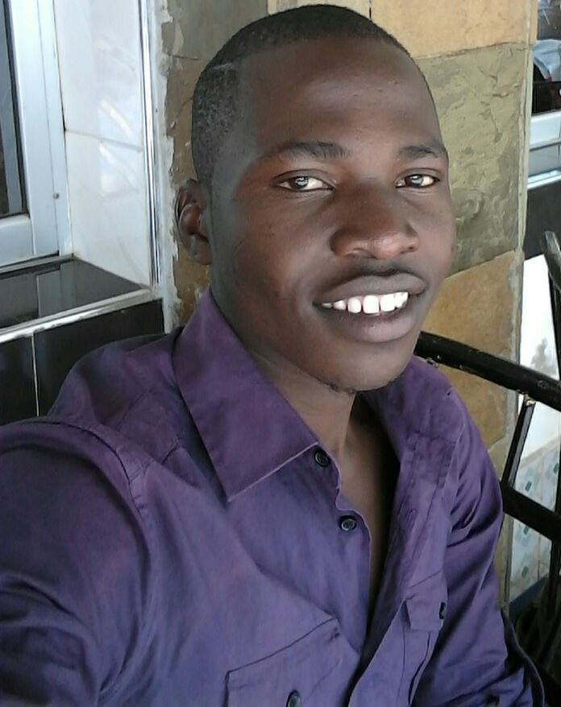

My name is Amoke Musa, a third year student at maseno university taking Bsc Computer Science. I was born on 3rd March, 1995 in Migori county. Am the last born in our family. Am a christian and i love singing songs which praise the Lord. My hobbies are travelling, reading jornals, swimmimg and dancing. i have a great passion in software development and networking.
Amoke Musa
Private Bag, Maseno-KENYA
+254 712598661
amokem@yahoo.com